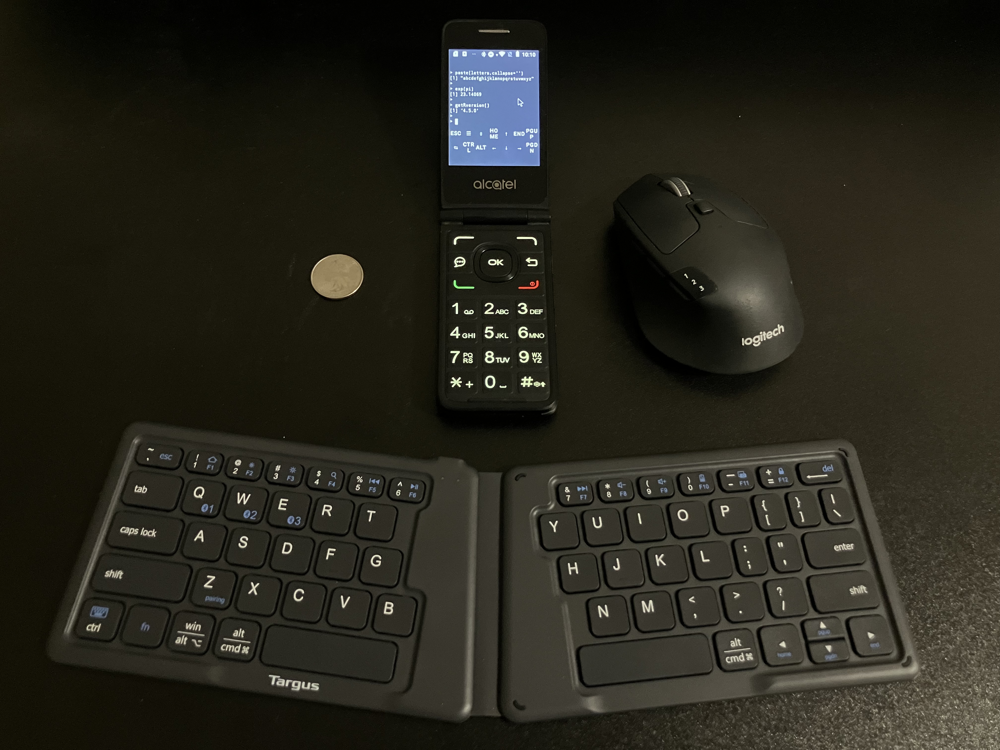

echo Hello WorldINTRO NEEDED

and photos! of the R stuff especially, and a glam photo of the phone and mouse setup lol
START BEGIN HERE
Disclaimer: Back up your phone before doing this! I did this with an old flip phone that I factory reset, so I wasn’t looking out for security or data concerns. Try at your own risk.
1. Termux: Android Linux Emulator
The first step is to install the Termux APK, which emulates a linux terminal with a decent amount of control.
Termux Installation on my Flip Phone
I’m using an old flipphone that isn’t really meant to run user-provided APKs. This was the process I figured out (from fragmentary advice online) to install and run arbitrary APKs:
enable dev mode by typing
*#*#33284#*#*(i.e.,*#*#DEBUG#*#*with the keypad)connect phone to computer via microusb, click OK on phone to enable usb file transfer
use https://app.webadb.com to install the APK (“Install APK” on sidebar) via ADB interface. (you can also do the ADB process manually)
(Note: APKs can be uninstalled by opening “Interactive Shell” from the sidebar, finding the app name by running
pm list packages, and then runningpm uninstall -k --user 0 PACKAGENAME)
Once I installed the Termux APK this way, I had to set a main menu shortcut in the settings to be able to launch it.
(To make it easier to launch other APKs, I also installed BlueLineConsole (other launchers didn’t work on this device), which I quite like. For our R purposes we won’t need any APKs other than Termux, though.)
2. Running R in Termux1
install and run the Termux app
ensure you have full keyboard control2 to use the terminal
- install Debian in Termux:
pkg install proot-distro
proot-distro install debian- log into Debian and install R and some useful commands3
proot-distro login debian
apt install curl
apt install git
apt install r-base-dev- you can now run a regular old R session!
R
print(R.version.string)- install.packages() generally works for packages that don’t build their own stuff on install.
install.packages("dplyr")
library(dplyr)
glimpse(iris,32)
Package Compatibility
Tested and working:
dplyrknitrmarkdown
Failed to install:
devtoolshttr2(you can get around this with clever use ofsystem()and curl)httpuvrmarkdown
3. Git Push with a Flip Phone
Here’s a knitted webpage I wrote and rendered (!) in R and committed to my repo, all on the flip phone.
Of course, I could have written this using nano, but it was more fun to write it as one big string within R.4
txt = "
<this is where I typed the Rmd body>
"
writeLines(knitr::knit2html(text=txt),'phonemarkdown.html')
q() #quit R and go back to the debian CLIThen I pushed it to this repo (!!) like this:
Setup: First, I needed to authorize the system to push to my repo.
ssh-keygen -t ed25519 -C "<MYEMAIL>" #create new SSH key for github
cat .ssh/id_ed25519.pub #print SSH key
#I then MANUALLY typed the SSH into my github account
ssh -T git@github.com #verify successful SSHCommit Push: Now I can push to my repo with the CLI.
git clone git@github.com:gbkorr/r-bites.git #clone repo from git
destination="r-bites/docs/flipphone-r" #destination directory
mv phonemarkdown.hmtl $destination #move file into repo
mv figure $destination #move plot dir into repo
cd $destination
git add phonemarkdown.hmtl figure #stage files
git commit -m "Created Rmd Page with Flip Phone"
git push #push commit
#then I DELETED the new SSH key on github
#because I don't know the security of thisWhy? Why not— what a cool thing to do!
Footnotes
I got most of this from here. There’s another resource you might see online for running R on Android, but it no longer works!↩︎
I had to connect a bluetooth keyboard since Termux didn’t like the flip phone keypad. I believe the regular touchscreen keyboard (along with Termux’s built-in buttons) should suffice for a normal android phone.↩︎
Only
r-base-devis required to run R, but the other two are useful to have around.↩︎It took some trial and error to get the knit to work without
rmarkdown.↩︎